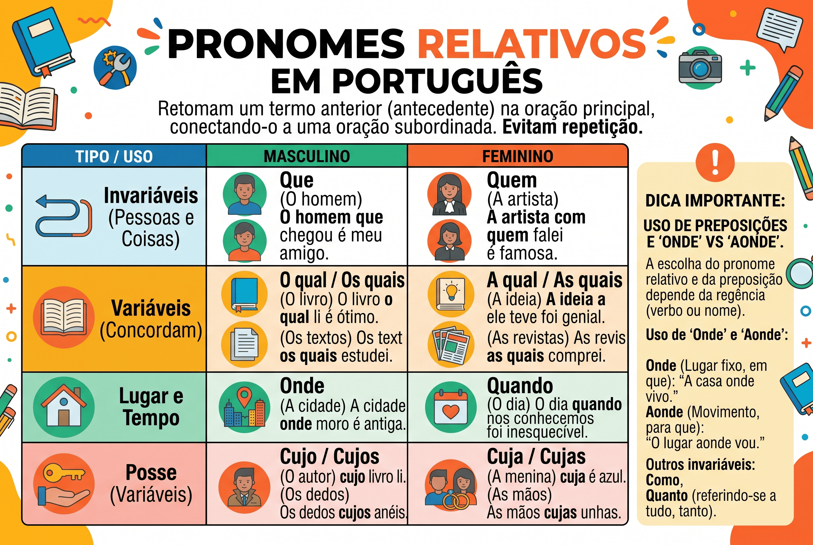

Pronomes Relativos: o que são, classificação, função e como usá-los
Os pronomes relativos são palavras essenciais para a construção de frases articuladas e bem estruturadas. Eles exercem um papel duplo nas orações: retomam um termo já mencionado anteriormente (chamado de antecedente) e, ao mesmo tempo, introduzem uma nova oração, conectando as duas partes.
Saber utilizar os pronomes relativos corretamente é um dos grandes segredos para garantir a coesão textual. Afinal, eles evitam a repetição desnecessária de palavras e tornam o texto muito mais fluido, elegante e fácil de ler.
Neste conteúdo, você vai aprender o que são os pronomes relativos, quais são os variáveis e invariáveis, como usar corretamente termos que geram muitas dúvidas (como cujo e onde), além de testar seus conhecimentos em um quiz focado em concursos e vestibulares.

O que é um pronome relativo?
O pronome relativo é a classe de palavra que substitui um substantivo (ou pronome) que já apareceu na oração anterior. A palavra substituída é chamada de antecedente.
Sem pronome relativo (repetitivo)
Comprei o livro. O livro é muito famoso.
Com pronome relativo (coeso)
Comprei o livro que é muito famoso.
O aluno que estuda alcança seus objetivos.
- Antecedente: O aluno;
- Pronome relativo: que (retoma "o aluno");
- Relação estabelecida: une a oração "o aluno alcança seus objetivos" com "o aluno estuda".
A principal função do pronome relativo é a coesão referencial por anáfora, ou seja, apontar para um termo que ficou para trás no texto, conectando ideias sem repeti-las.
Quais são os pronomes relativos?
Os pronomes relativos dividem-se em dois grandes grupos: os variáveis (que sofrem flexão de gênero e número para concordar com os termos da frase) e os invariáveis (que não se alteram).
| Classificação | Pronomes Relativos |
|---|---|
| Invariáveis (não mudam) | que, quem, onde |
| Variáveis (mudam em gênero e/ou número) |
o qual, a qual, os quais, as quais cujo, cuja, cujos, cujas quanto, quanta, quantos, quantas |
Como usar os pronomes relativos corretamente?
Cada pronome relativo possui regras específicas de uso. O emprego inadequado pode gerar problemas de coerência ou erros gramaticais graves. Veja as regras dos principais:
O pronome "Que"
É considerado o pronome relativo universal, pois é o mais utilizado. Pode retomar tanto pessoas quanto coisas.
A casa que comprei é antiga. (Retoma coisa: casa)
A mulher que chegou é minha chefe. (Retoma pessoa: mulher)
O pronome "Quem"
Refere-se exclusivamente a pessoas ou seres personificados. Geralmente, vem precedido de preposição.
O professor de quem falei não veio hoje.
O pronome "quem" retoma "o professor" e exige a preposição "de" devido à regência do verbo "falar" (quem fala, fala de alguém).
Os pronomes "O qual, a qual" e flexões
São usados no lugar de "que" ou "quem" para evitar ambiguidades ou após preposições com mais de uma sílaba (como sobre, perante, através).
Visitei a tia do meu amigo, a qual mora em São Paulo.
Neste caso, "a qual" deixa claro que quem mora em SP é a tia, e não o amigo. Se usássemos "que", a frase ficaria ambígua.
O pronome "Cujo" (e flexões)
Este é o pronome que mais gera dúvidas. Ele estabelece uma relação de posse. O "cujo" sempre fica entre o possuidor e a coisa possuída e concorda em gênero e número com a coisa possuída (o termo que vem depois dele).
Termo anterior (possuidor) + CUJO + Termo posterior (coisa possuída)
O escritor cujo livro li é excelente. (O livro é do escritor).
Atenção: É gramaticalmente incorreto colocar artigo (o, a, os, as) logo após o pronome cujo. NUNCA escreva "cujo o" ou "cuja a".
O pronome "Onde"
O pronome "onde" só pode ser utilizado para retomar a ideia de lugar físico.
A cidade onde nasci é muito fria. (Correto: "cidade" é um lugar físico).
Dica de prova: Cuidado com o erro clássico de usar "onde" para situações ou tempos. Por exemplo, a frase "A reunião onde discutimos as metas" está ERRADA, pois reunião não é lugar físico. O correto seria: "A reunião na qual (ou em que) discutimos as metas".
Preposição antes do pronome relativo
Quando o verbo da oração introduzida pelo pronome relativo exigir preposição, ela deve aparecer antes do pronome.
- O filme a que assistimos é ótimo. (Quem assiste, assiste a algo).
- A cidade de que gosto fica no sul. (Quem gosta, gosta de algo).
- O rapaz com quem saí é simpático. (Quem sai, sai com alguém).
Quiz — Pronomes Relativos
Questão 1 — Assinale a frase em que o uso do pronome relativo está INCORRETO segundo a norma-padrão:
Questão 2 — No trecho: "Conheço o aluno cujo pai é diretor da escola", o pronome destacado estabelece uma relação de:
Questão 3 — Em qual alternativa o pronome relativo "que" poderia ser substituído por "a qual" sem prejuízo de sentido e concordância?
Resumo sobre Pronomes Relativos
- Os pronomes relativos retomam um termo da oração anterior (antecedente) e unem duas orações.
- Eles são ferramentas cruciais para manter a coesão referencial (anáfora) de um texto.
- O pronome "que" é universal (retoma pessoas e coisas).
- O pronome "quem" retoma somente pessoas e quase sempre exige preposição.
- Os pronomes "o qual", "a qual" são ótimos para desfazer ambiguidades na frase.
- O pronome "cujo" indica posse. Ele concorda com o termo seguinte e não admite artigo (nada de "cujo o").
- O pronome "onde" é de uso exclusivo para lugares físicos. Para situações abstratas, use "em que" ou "no qual".
- A regência verbal deve ser respeitada: se o verbo da oração pede preposição, ela deve vir antes do pronome relativo (ex: o livro de que preciso).
Conclusão
Os pronomes relativos não são apenas meras classificações gramaticais; eles são peças-chave para a fluidez e a clareza da comunicação. Sem eles, nossos textos seriam fragmentados, infantis e repletos de repetições exaustivas.
Ao dominar o uso de pronomes como "que", "onde", "cujo" e as flexões "o qual", você garante não só um melhor desempenho em questões de análise sintática e morfológica em provas de concursos e vestibulares, mas também eleva consideravelmente a qualidade das suas redações e textos argumentativos, garantindo uma coesão impecável.
Perguntas frequentes sobre Pronomes Relativos
Como achar o pronome relativo na frase?
Procure a palavra que está ligando duas orações e tente substituí-la por "o qual" (ou suas flexões). Se a substituição fizer sentido e a palavra estiver retomando um termo já citado, ela é um pronome relativo. Ex: O carro que (o qual) quebrou é meu.
Pode usar "cujo o" ou "cuja a"?
Não, nunca. Pela norma-padrão da língua portuguesa, é proibido o uso de artigo imediatamente após o pronome cujo. O correto é "A mulher cujo filho é médico" (e não "cujo o filho").
Qual a diferença entre "que" conjunção integrante e "que" pronome relativo?
O "que" pronome relativo retoma um nome (substantivo) anterior e pode ser trocado por "o qual" (ex: O bolo que fiz queimou). O "que" conjunção integrante introduz uma oração subordinada substantiva e toda a oração pode ser substituída por "ISSO" (ex: Eu espero que você venha -> Eu espero ISSO).
Quando devo usar "onde" ou "aonde"?
Use "onde" para indicar permanência ou lugar fixo (Ex: Onde você mora?). Use "aonde" com verbos que indicam movimento, pois equivale a "a que lugar" (Ex: Aonde você vai?). Em ambos os casos, a referência deve ser estritamente a lugares físicos.
Conteúdos relacionados
Referências bibliográficas
- BECHARA, Evanildo. Moderna Gramática Portuguesa.
- CEGALLA, Domingos Paschoal. Novíssima Gramática da Língua Portuguesa.
- CUNHA, Celso; CINTRA, Lindley. Nova Gramática do Português Contemporâneo.
Explore Outros Conteúdos
Continue seus estudos acessando outras seções do site Mestre Kira: